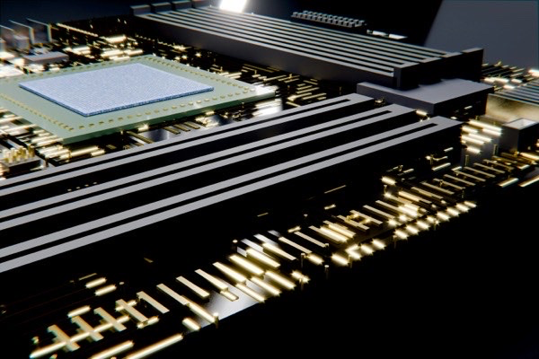

Artikler
Fra Chat til Checkout
En artikkel om hvordan chatbots og AI påvirker netthandel og kundeopplevelse.
Les mer
CPU, RAM og Flaskehalser
En artikkel om maskinvare, ytelse og hvordan flaskehalser kan oppstå i datasystemer.
Les merOSI-modellen og feilsøking
En artikkel om OSI-modellen og hvordan den brukes til systematisk feilsøking i nettverk.
Les mer